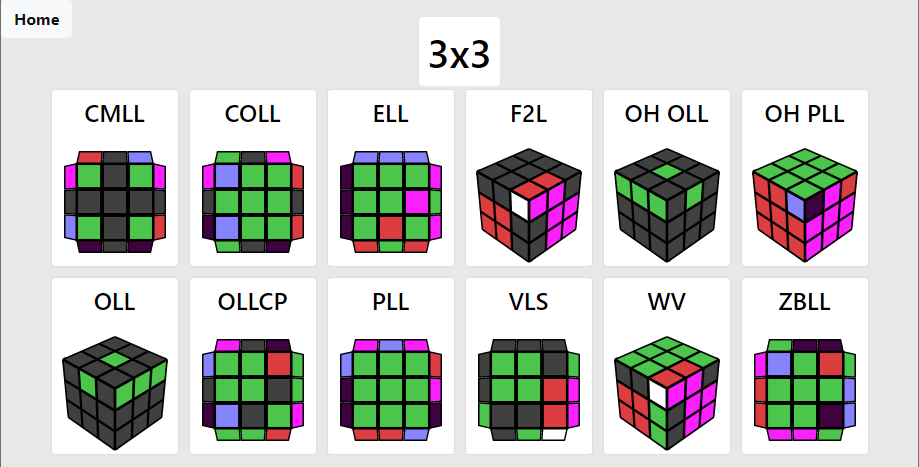

Do you use AlgDb.net?
Do you use a non-standard color scheme, or are you color-blind? If you answer yes to both then this is the tool for you.
Here's an example of what you can make AlgDb look like:

The steps:
- At the main page, change the colors to fit your prefrences and click "Copy to clipboard".
- Create a bookmark and paste the text as the link. You can name it whatever you want.
- While viewing any page at AlgDb, click the bookmark to change the colors.
- The colors go back to normal any time you load or reload a page, so keep the bookmark easily available if you use AlgDb often.